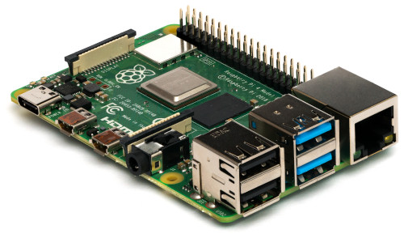
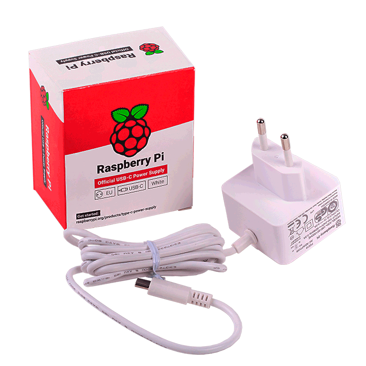
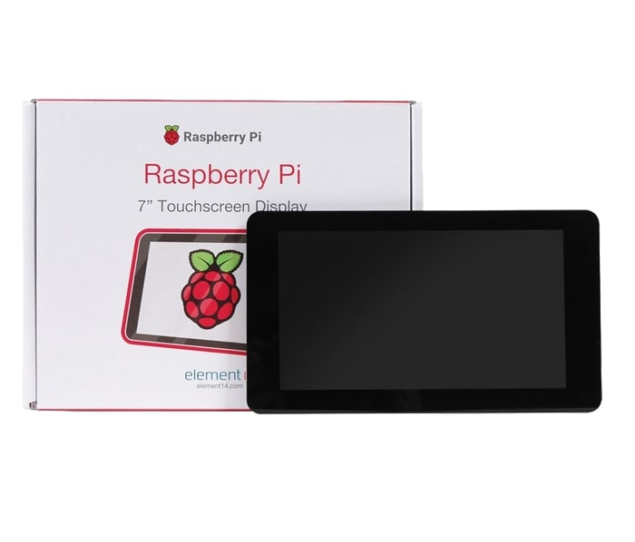
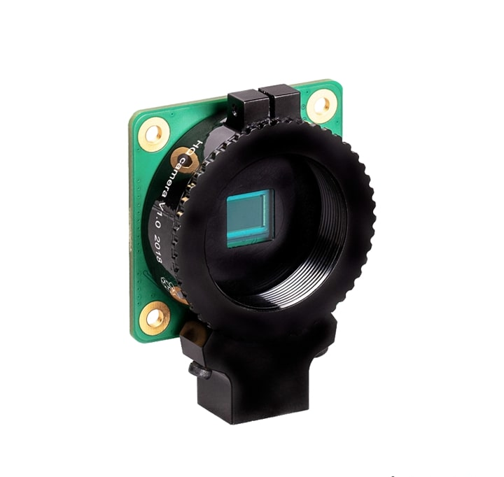

Índice
¿Qué es?
¿Qué pudo hacer?
Sistemas Operativos
Características
¿Qué es?
La Raspberry PI es un Mini-PC de placa única. Fue desarrollado por la Raspberry PI Foundation como proyecto sin ánimo de lucro para promocionar la enseñanza de la informática en las escuelas. Su objetivo es el de poner en manos de las personas de todo el mundo el poder de la informática y la creación digital. El proyecto ha acabado siendo más popular de lo que se esperaba debido a su bajo precio y la Raspberry PI se ha convertido el mini-pc más popular, utilizándose en una gran variedad de proyectos diferentes.

¿Qué se puede hacer?
- Programación
- El sistema operativo Raspbian ya viene con soporte para aprender a programar con Scratch, Python, desarrollo web, etc
- Robótica
- Mediante su puerto GPIO se pueden realizar infinidad de proyectos electrónicos y de robótica
- Como PC de escritorio
- Para un uso ofimático, navegación por Internet, edición de imagenes, etc
- Centro multimedia
- Como centro multimedia conectada a una TV o emulador para videojuegos
- Y un largo etcétera
Sistemas Operativos
Raspberry PI usa principalmente sistemas operativos GNU/Linux, Raspbian, una distribución derivada de Debian que está optimizada para el hardware ded Raspberry PI, se lanzó durante julio de 2012 y es la distribución recomendada por la fundación para iniciarse.
- GNU/Linux
-
Raspbian
-
Arc Linux
-
Ubuntu Mate, Ubuntu Server y Ubuntu 20.10
- Otros
-
OpenElec: centro multimedia
-
Retropie: emulador de máquinas arcade y consolas retro
-
PiNEt: proyectos de Internet of Thing
-
Windows 10 WoA: proyectos de IoT
Características y Accesorios
- SOC Broadcom(CPU + GPU + RAM + Controladoras)
- Almacenamiento
- Salida HDMI/MicroHDMI
- Alimentacion por microUSB de 2.5 A.
- Accesorios: camara PiCAM, pantalla tactil, PiHat(sensores)


